In this hands-on workshop, we'll explore Google AI Studio, the easy way to prototype and interact with Google's powerful AI, and discuss the Gemini API that drives it. Gemini is Google's advanced, multimodal AI, capable of understanding diverse information like code and images, not just text.
Our focus today is hands-on application: learning how these tools can help you write code faster, debug smarter, communicate clearer, and brainstorm better. By the end, you'll see how to effectively integrate AI into your development process to boost productivity and creativity.
Google AI Studio is a free, web-based tool for prototyping and deploying apps with Google's Gemini AI models. Key features:
The Gemini API is Google's programming interface that lets developers integrate Gemini AI models (like Gemini 1.5 or Gemini Pro) into apps, websites, and services. It enables:
Sign in with your Google account into Google AI Studio
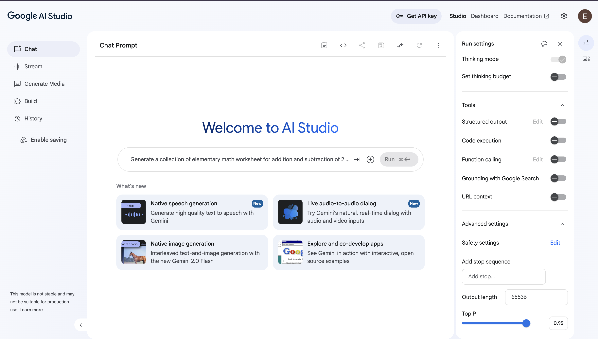
The vertical panel on the left side of the interface is where you choose the type of prompt you want to create and access your past work.
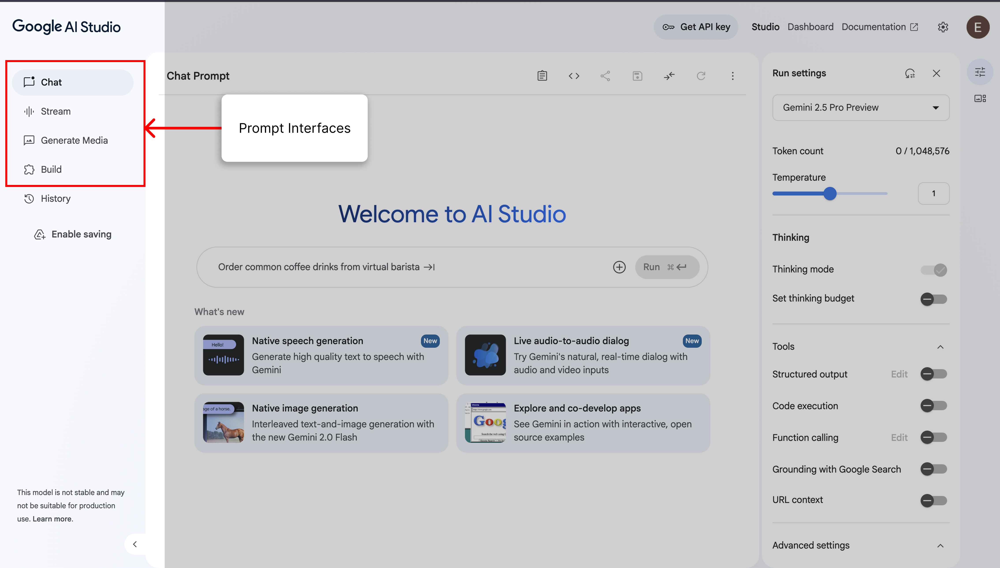
This prompt interface is the primary space where you interact with the AI.
The panel on the right gives you fine-grained control over how the AI model responds.
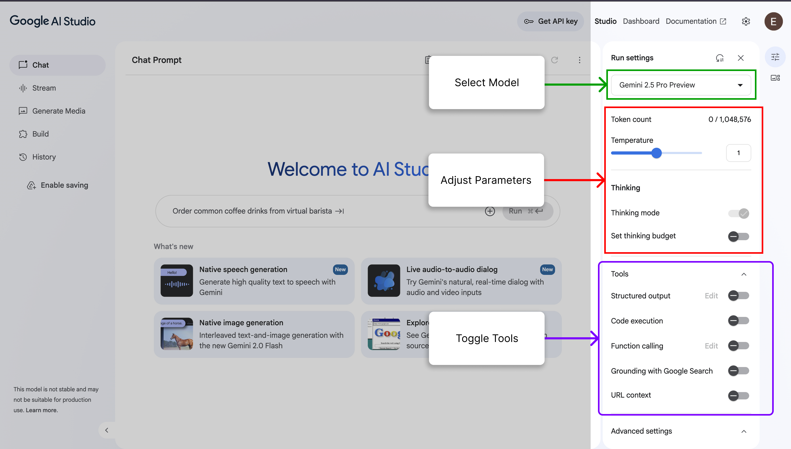
The stream interface enables live, real-time conversations with Gemini. It lets you use your voice, webcam, and screen for a direct, continuous, multimodal dialog.
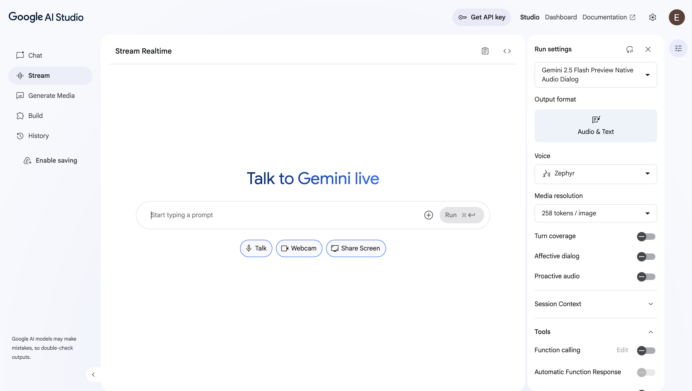
The right panel contains a new set of controls specifically tailored for the "Stream Realtime" audio dialog mode.
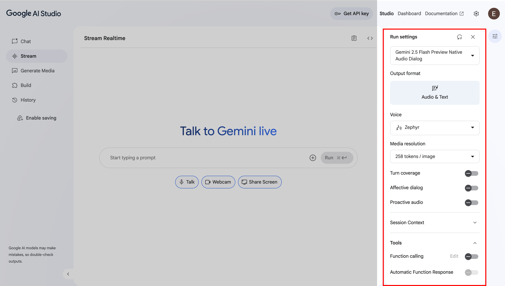
This is where you can create content beyond text, select your model of choice, add a prompt and generate your media. The Imagen model can be used to to generate high quality images across multiple aspect ratios, while Veo can be used to animate images and create video clips.
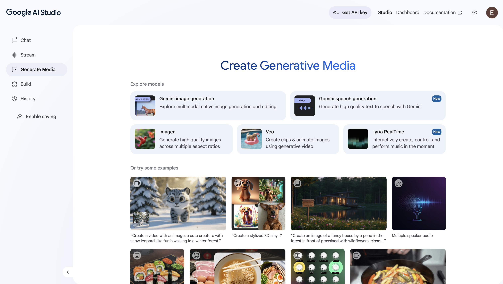
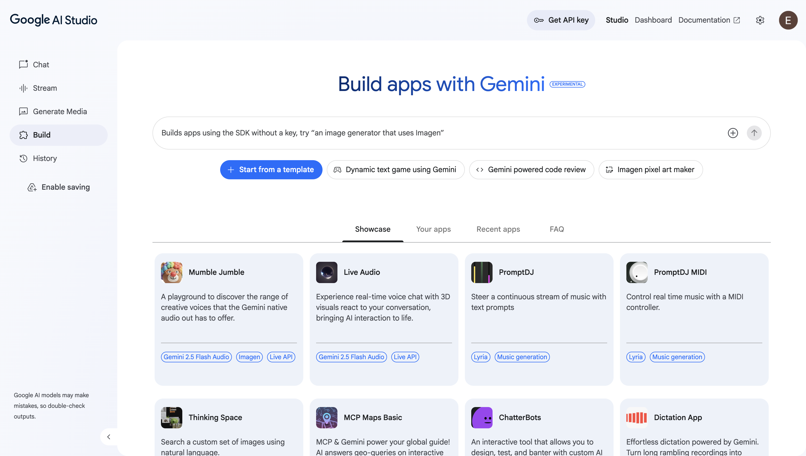
Prompt:
Write a Python function that prints "Hello World!"
Prompt:
Explain the error in this Python code and fix it:
def divide(a, b):
return a / b
print(divide(10, 0))
Turn on the Structured Output tool.
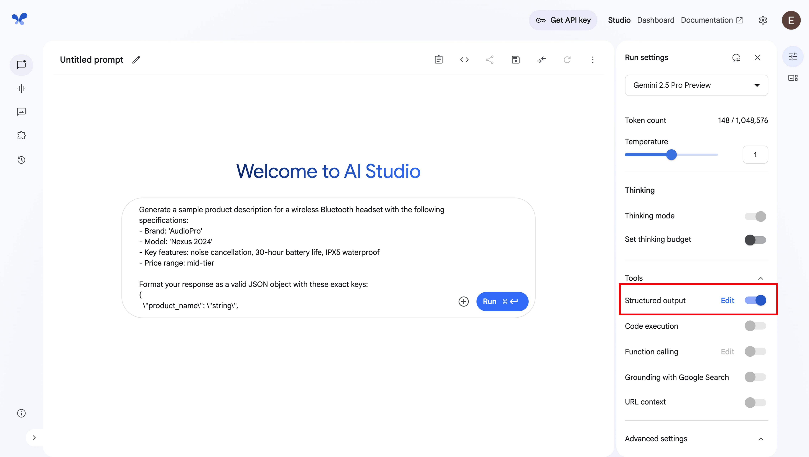
Prompt:
Generate a sample product description for a wireless Bluetooth headset with the following specifications:
- Brand: 'AudioPro'
- Model: 'Nexus 2024'
- Key features: noise cancellation, 30-hour battery life, IPX5 waterproof
- Price range: mid-tier
Format your response as a valid JSON object with these exact keys:
{
\"product_name\": \"string\",
\"brand\": \"string\",
\"features\": [\"array\", \"of\", \"strings\"],
\"price_category\": \"string\",
\"target_audience\": \"string\"
}
Prompt:
Whats the latest React version?
Outdated result:
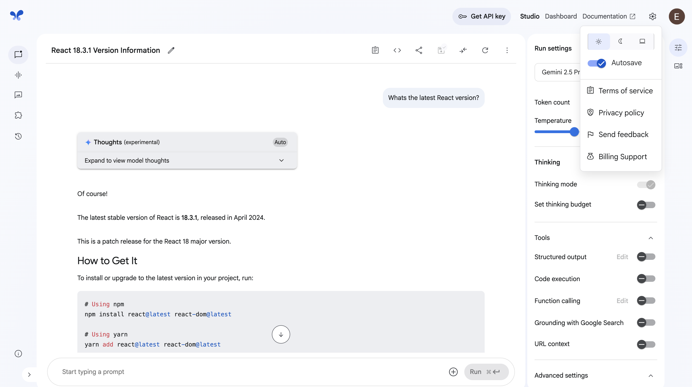
Turn on Grounding with Google Search tool.
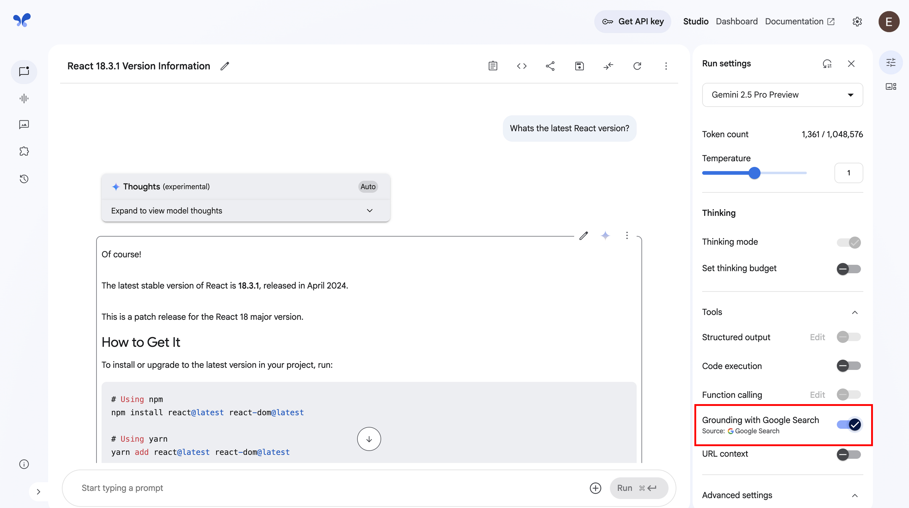
Updated result:
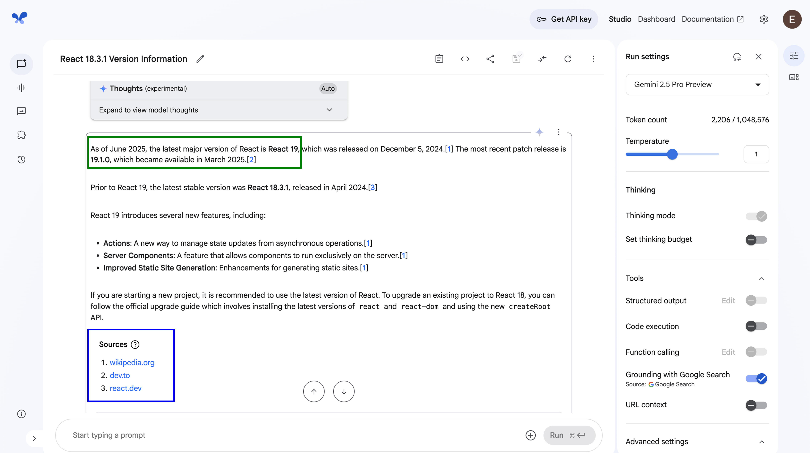
Prompt:
Explain this Python TypeError and provide a step-by-step fix.
Code:
ratings = [4, 5, "3", 4, 2]
total = sum(ratings)
average = total / len(ratings)
print(f"Average rating: {average:.1f}/5")
Upload the CLI error image
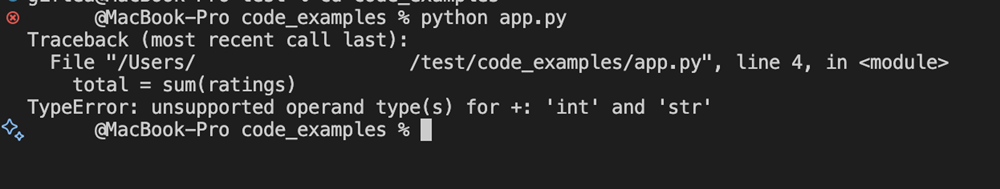
System Instruction:
You are a computer programming instructor
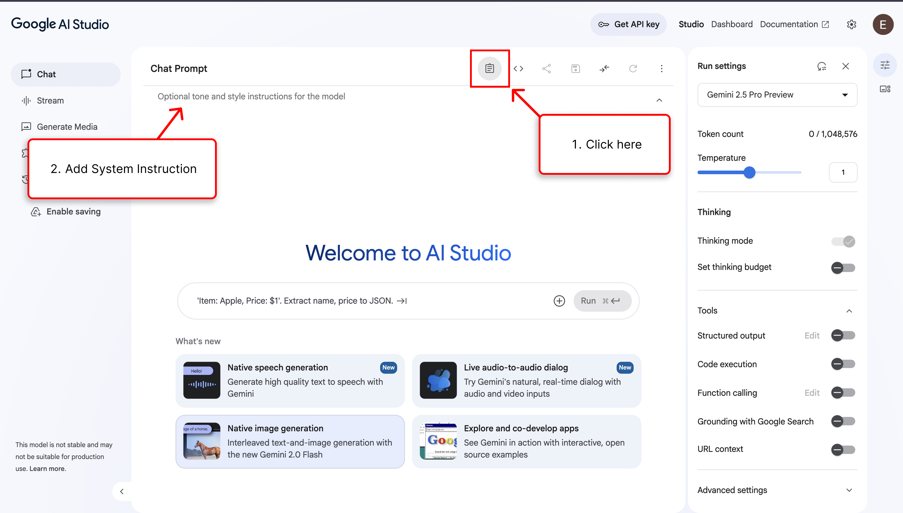
Prompt:
Explain computer programming to a high school student
Prompt:
Build a recipe generator app that takes a list of ingredients and generates a recipe with visually appealing images.
After the model generates the app, you can add new features to the app and also inspect the code. 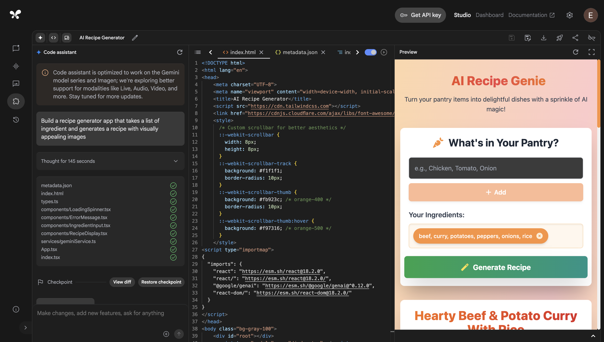
This is the final product the model generated:
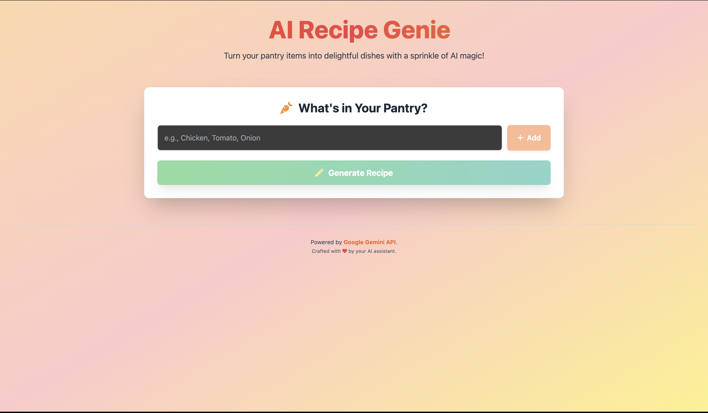
In this hands-on session, we explored Google AI Studio and the Gemini API. We started by exploring the AI Studio interface, learning how to fine-tune models and adjust settings for optimal results. Through practical exercises, we mastered various prompting techniques, from basic queries to advanced multimodal inputs.
The highlight was building our AI recipe generator, taking ingredients as input and generating complete recipes with visual appeal. This demonstrated Gemini's capabilities in content creation and API integration.
Remember: effective prompting and proper model configuration are key to unlocking Gemini's full potential. We encourage you to apply these techniques to your own projects.
For further learning, visit the Gemini API documentation and continue experimenting in AI Studio.
Thank you for participating!